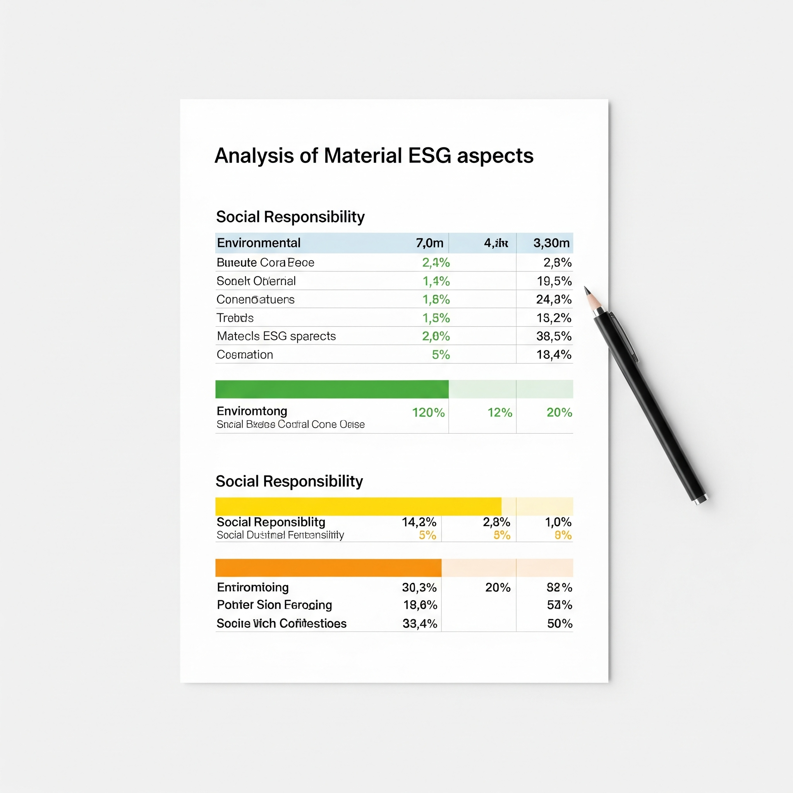

11. Análisis de aspectos ASG materiales
En este bloque se analizan los factores Ambientales, Sociales y de Gobernanza (ASG) más relevantes en el contexto del desarrollo de aplicaciones web y las tecnologías de la información. Se define el concepto de aspectos ASG, se detalla la metodología para identificar los aspectos materiales, y se presentan los más importantes para empresas TIC. Este análisis permite al estudiante aplicar criterios sostenibles y éticos en sus proyectos tecnológicos.
- 11.1. Definición de aspectos ASG
- 11.2. Metodología para identificar aspectos materiales
- 11.3. ASG más relevantes para empresas TIC y desarrollo web
